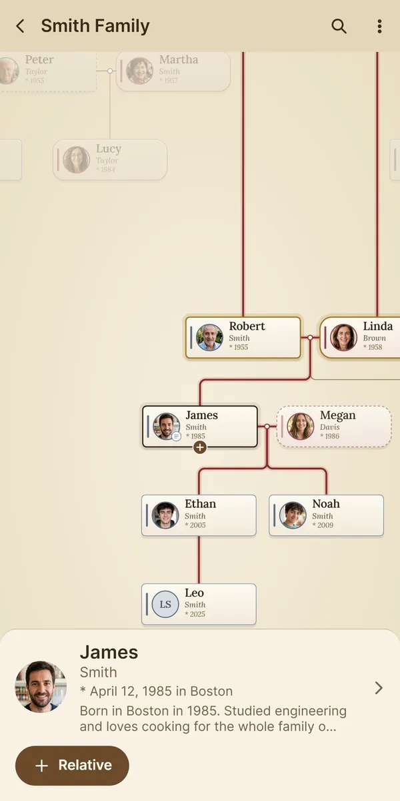

Easy Family Tree · Android & Windows
Ramo: your family tree, easy to build, share and print
Ramo is a family tree app for Android phones and Windows PCs. Add your family by tapping the cards, send the tree to everyone as a PDF and print it large to frame or give as a gift. No account, no ads.
Free to start · No account, no ads · No subscription


EasyStart with yourself and add your family by tapping the cards. Ramo arranges the tree for you.
Made to shareAs a PDF or an image, or the tree itself so each relative can fill in their branch.
Made to printOn several sheets or as one poster: 11×14, 16×20, 18×24 in, or 50×70 cm.
YoursEverything stays on your phone. No sign-up, no ads, works offline.
Ramo in your language
The app and this website are in six languages. Choose yours to see the app and the free guides: how to make a family tree, a printable template, a cousin calculator and more.